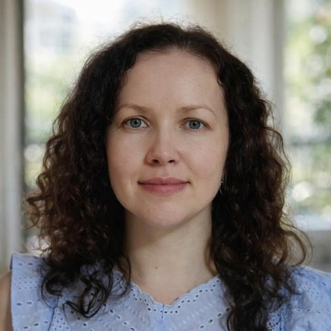
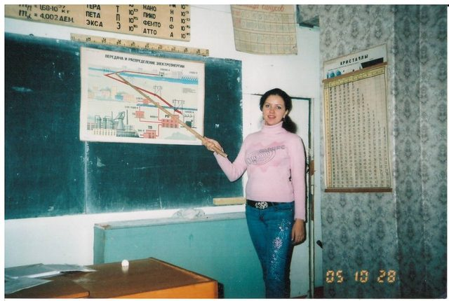
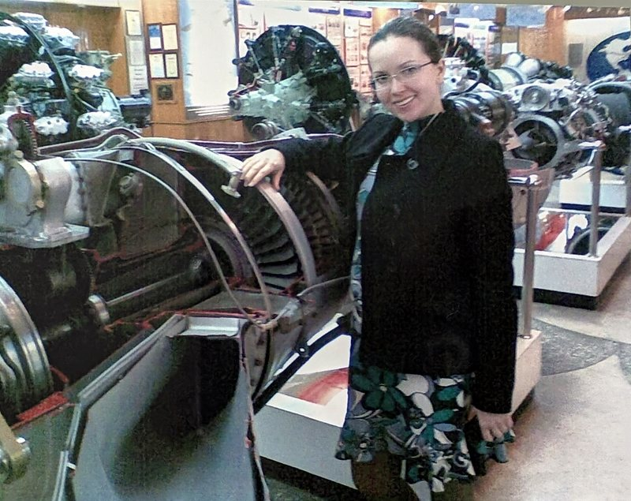
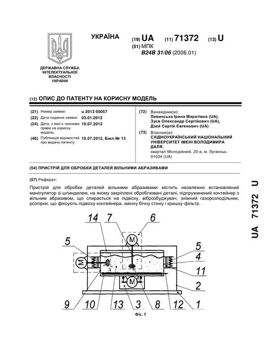
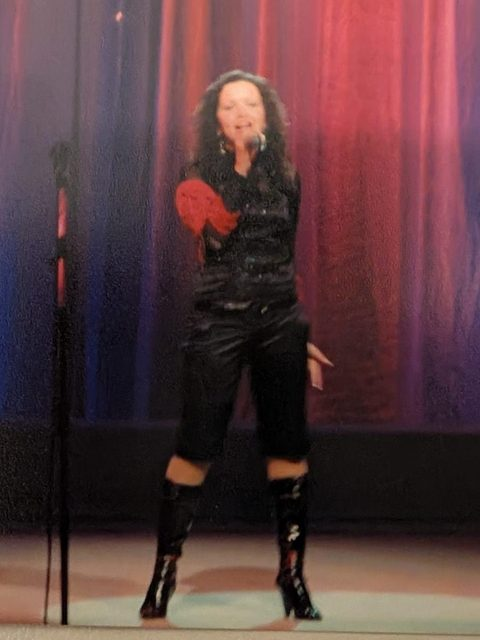

Data Analyst mit einem Hintergrund in Physik und Erfahrung in wissenschaftlicher Analyse und Berichterstattung. Ich helfe mit präzisen Analysen und datenbasierten Insights.

Ich bin Physikerin, habe Mathematik und Physik unterrichtet und sechs Jahre in der angewandten Forschung gearbeitet – mit Experimenten, Messreihen, mathematischen Modellen und Patenten. In Deutschland habe ich mich zur Data Analystin und BI-Spezialistin weitergebildet (StackFuel, Berlin).
Meine aktuellen Fähigkeiten umfassen: Power BI (Dashboards, Datenmodellierung, DAX), SQL (PostgreSQL, SQL Server), Python (Pandas, NumPy, scikit-learn), Datenaufbereitung und Visualisierung sowie Statistik.
Ich arbeite praxisnah, lerne kontinuierlich neue Tools und zeige in meinen Projekten, wie Daten echte Entscheidungen unterstützen können.
2001 – 2006
Bachelor und Master of Science in Physik sowie Lehramtsdiplom (Physik und Mathematik), Nationale Taras-Schewtschenko-Universität Luhansk. Masterarbeit über die optischen Eigenschaften dünner Kohlenstoff-Stickstoff-Schichten.
2005 – 2008
Unterricht an einer höheren Berufsschule in Luhansk – komplexe Inhalte verständlich erklären und strukturieren.

2008 – 2014
Wissenschaftliche Mitarbeiterin und Doktorandin an der Ostukrainischen Wolodymyr-Dahl-Universität. Ich habe untersucht, wie sich komplex geformte Metallteile effizienter schleifen und polieren lassen – in einer Kammer, in der Druckluft das Schleifmittel in einen schwebenden Zustand versetzt (Wirbelschicht).
Dafür habe ich Experimente geplant und durchgeführt, Messreihen ausgewertet, mathematische Modelle verglichen und daraus Verbesserungen für die Anlagen abgeleitet. Zwei davon sind als Patente geschützt. Mehr zu meiner Forschung →


Was ich daraus mitnehme: Untersuchungen sauber planen, Messdaten kritisch prüfen, Modelle mit der Realität vergleichen und Ergebnisse verständlich berichten – genau das brauche ich heute in der Datenanalyse.
2014 – 2022
Familienphase und Deutsch bis zum Niveau C1 (telc).
2022 – 2024
Data Analyst / Data Scientist und Business Intelligence Analyst bei StackFuel (Berlin), dazu IBM SPSS – Python, SQL, Machine Learning, Power BI, DAX und Data Storytelling.
seit 2025
Ehrenamtliche Leitung eines Kinder- und Familienprogramms: Planung für über 50 Familien, ein eigenes Anmeldesystem mit PostgreSQL und Auswertungen mit SQL und Power BI. Zum Dashboard-Projekt →

Musik begleitet mich seit meiner Kindheit: Ich singe – unter anderem als Preisträgerin eines regionalen Festivals – und spiele Klavier. Auf der Bühne habe ich gelernt, gut vorbereitet und ruhig zu bleiben, wenn es darauf ankommt.